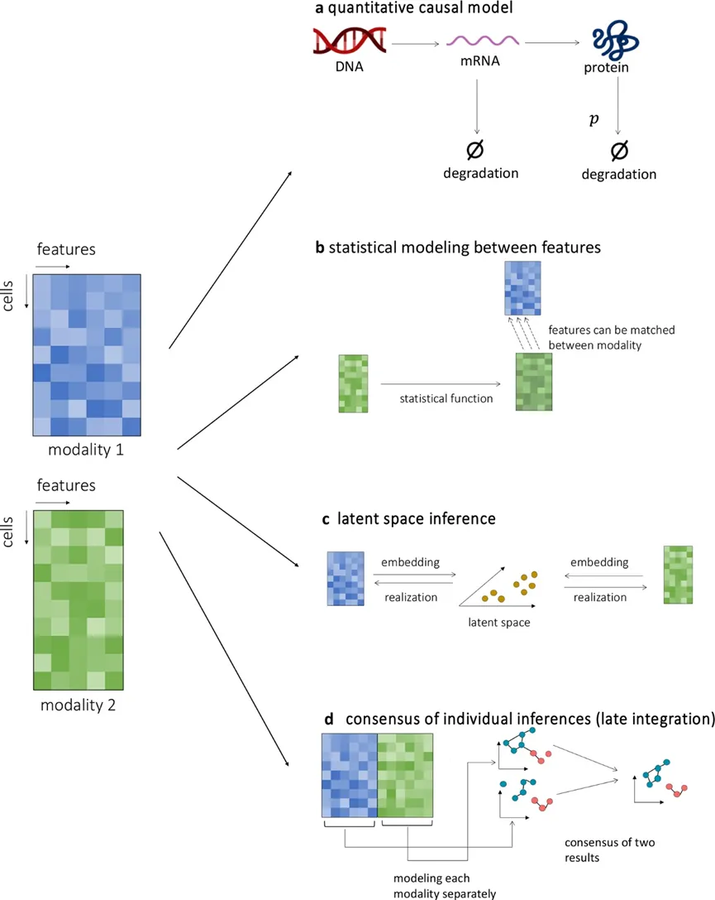
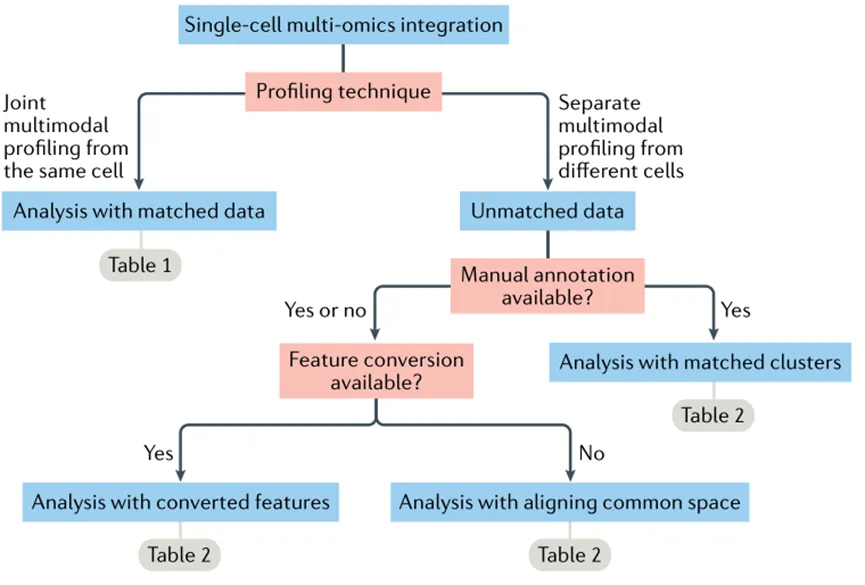
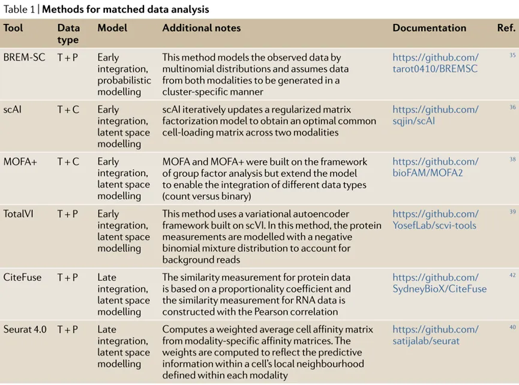
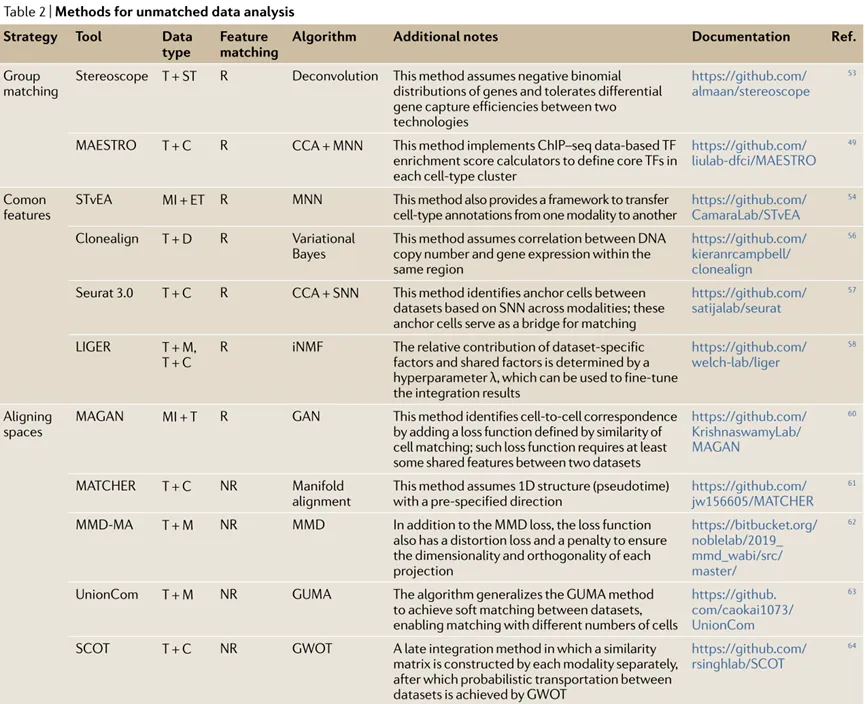
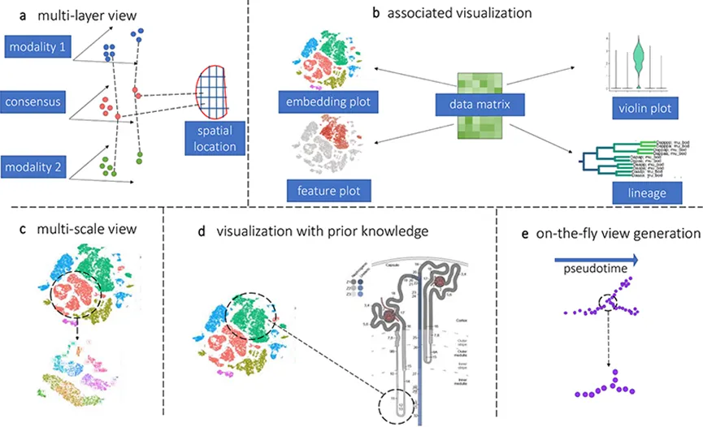

百万级单细胞多组学数据集成
原文：https://mp.weixin.qq.com/s?__biz=MzAwMzIzOTk5OQ==&mid=2247499336&idx=1&sn=864c535b38ce630487fccc602d893a80&chksm=9b3c8718ac4b0e0e8a0e2560a83546167a82616d99503606e3ac0ef29e90b01cc762e95d64e6#rd 合集：单细胞教程全收录 / 文献速递 / 粉丝来稿
写在前面
这是一篇粉丝来稿，文章题目为“Multi-omics integration in the age of million single-cell data”，于2021年发表于《Nature Reviews Nephrology》上，影响因子为42.439。由于单细胞目前快速的买入了百万级、多组学的时代，近年来单细胞的大数据 处理与多组学整合成为各软件、算法开发的热点。本文综述了单细胞各组学的算法与工具，感兴趣的同学可以顺藤摸瓜，把本文提到的内容展开学习一番~
做数据分析时电脑配置力不从心的同学可以参考这里：
doi： 10.1038/s41581-021-00463-x 链接： https://www.ncbi.nlm.nih.gov/pmc/articles/PMC9191639/
摘要
单细胞技术的迅猛发展揭示了以前被忽视的细胞类型和新的细胞状态与性别、疾病、发育和其他过程的关联的异质性。从转录组分析开始，单细胞技术已经扩展到多组学方法，可以同时测量数据模式和空间细胞环境。可以获得数百万个细胞的数据，用于全基因组测量和多种模式。尽管对这种多模式数据集的分析有可能为生物过程提供新的见解，而这些见解无法用单一的分析模式来推断，但将非常庞大、复杂的多模式数据整合到生物模型和机制中是一个相当大的挑战。● a)本文综述了多组学数据集成计算方法的研究进展；
● b)提供数据集成原则的总体概述；
● c)以更实际的数据为中心，讨论哪些方法可以应用于特定的数据集；
i.讨论在同一细胞上测量的多组数据的集成分析方法； ii.讨论在不同细胞上测量的多组数据的集成分析方法； iii.讨论可以集成不同测量模式的数据可视化方法； iv.重点关注决定不同方法的优势和挑战的原则和一般因素。
文章要点
●随着单细胞多组学技术的发展，数据集成的工具和模型的选择至关重要。
●单细胞生物学中的数据整合问题可以分为与匹配和不匹配数据的整合相关的问题。
●整合匹配数据的策略包括联合潜在空间推断，个体推理一致性和生物因果模型。
●整合不匹配数据的策略包括注释组匹配、与常见特征匹配和对齐空间。
●综合多模式单细胞数据的可视化方法仍不成熟。
●未来的挑战包括考虑与每种模态相关的特定噪声，克服对计算效率的需求，以及开发生物可解释的集成策略。
主要研究内容及结果
● Overview of single-cell data integration 单细胞数据集成概述
现有的研究表明，多模态数据集成可以得出单一分析模式无法得出的推论。目前有许多计算方法可以辅助单细胞多模态组学数据集成分析，但是每种方法都有不同的优点和缺点(图1)。

● a Quantitative causal modelling 定量因果模型
**● a.1 背景：**多模态数据集成最主要的形式是考虑产生测量的实际生物过程。
● a.2 原理：
a.2.1 染色质状态、RNA水平和蛋白质水平代表了细胞单系统水平分子动力学的不同方面；表观基因组状态、RNA分子数量和蛋白质分子数量之间存在因果关系。a.2.2 细胞的精确定量系统模型，使用相关联的多模态测量来估计参数，从而得出细胞动态状态的综合推断。
**● a.3 优点：**计算方法包含细胞分子动力学的部分系统模型。
a.3.1 RNA速度算法提出转录、剪接和降解动力学的微分方程模型，并使用外显子和内含子读取估计模型的参数。a.3.2 计算工具protaccel将这个动力学模型扩展到包括蛋白质的微分方程项，允许基于RNA和蛋白质数据模型的整合。
**● a.4 缺点：**基于细胞系统模型的数据集成方法是多模态数据集成的理想方法，由于缺乏可靠的模型，目前不能实现。
● b Statistical modelling 统计模型
**● b.1 背景：**在缺乏因果动力学模型的情况下，另一种集成方法是使用统计模型将不同的测量方式相互联系起来(图1b)。
● b.2 原理：
b.2.1 建立RNA水平和蛋白质水平之间的统计关系，或者建立基因周围染色质的位置和数量与其RNA水平之间的统计关系。b.2.2 集成不同数据模态的方法是在两个或多个模态之间创建统计模型，以便一种数据类型的值可以映射到另一种类型。
**● b.3 优点：**模型可以从参考数据集或者符合感兴趣的数据集进行校准。是一种模态的所有数据点都被转换（映射到）另一种模态，能增强数据集能力。
**● b.4 缺点：**这种翻译不能为与每种数据类型相关的生物过程提供额外的见解，因为这个过程只会将一种数据类型转换为另一种。
● c Latent space modelling 潜在空间建模
**● c.1 定义：**将一种数据类型转换为另一种数据类型，也可以看作是在一组变量和另一组变量之间构造一个函数(通常称为映射)。
● c.2 背景：
c.2.1 在缺乏更机械或因果模型的情况下，潜在空间模型表示的不同类型的测量必须都代表细胞中未知分子状态的某些方面。c.2.2 转录组、蛋白质组和染色质状态都可以被认为是细胞抽象的“潜在分子状态”的一个方面(图1c)。
● c.3 缺点：
c.3.1 潜在空间通常没有物理或化学解释，这使得很难知道集成空间在细胞的实际分子状态方面意味着什么。c.3.2 同一组细胞可能有不同的潜在空间表示，模拟不同的隐藏生物状态。因此，潜在空间作为数据整合模型的效用和多样性取决于生物推理的目标。
● d Late integration 后期集成
**● d.1 定义：**不试图将测量数据彼此关联起来，而是试图使用每种数据模态来推断该数据类型特有的模型或结果，然后尝试集成输出模型或结果(图1d)。
● d.2 用途：
d.2.1 可独立地从转录组和蛋白质组推断基因调控网络。d.2.2 在应用算法来协调集群之前，独立地估计每个数据模态中的细胞类型集群。总之，不同的数据集成方法可以帮助得出的推断超过其各部分的总和。
以更实际的以数据为中心的观点来说明给定一组特定的数据可以应用什么方法(图2)。

● Integrating jointly profiled multi-omics data 整合联合分析的多组学数据
单细胞测量的最大挑战是从有限数量的材料中恢复分子分数。当试图恢复不同的分子区室时，分子恢复效率的问题会加剧。最流行的匹配多模态技术是联合snRNA- seq和snATAC- seq方案实现。此外，已经建立了测量单细胞表型和转录组数据的技术，为单细胞分析提供了重要的额外维度。
● a Naive approaches 朴素法
定义： 对数据进行转换，使所有特征(即测量属性)具有同质统计特征，通过样本之间的变化来衡量每个特征。
模型： BREM-SC，假设每个基因在每个细胞类型中都有多项分布，用于使用CITE- seq获得的RNA和蛋白质计数矩阵。这种类型的模型支持细胞类型的概率聚类。
缺点： 朴素法很简单，但忽略了不同模式的生物学背景，而是试图协调不同特征的统计特征，限制了它们的实用性。
● b Latent space approaches 潜在空间方法
模型： scAI、MOFA、MOFA+、totalVI、Seurat V4
原理：
单细胞聚集和整合(scAI)：先用随机选择的相邻值的类似加权平均值替换细胞的值，以“平滑”稀疏值；再通过假设转录组和表观基因组的数据矩阵共享潜在空间的加权线性函数，从而推断出潜在的潜在空间。多组学因子分析(MOFA)及其更新版本实施群体因子分析（MOFA+）：确定多种模式的共同变化。在每个模态中观测到的数据被认为是一个潜在公共空间的线性加权函数。MOFA+增加了多个潜在空间，以解释群体效应，如不同的实验批次。虽然该模型的基本数学结构与scAI相似，但MOFA将模型与数据关联的方式不同。TotalVI：具有与scAI和MOFA相似的结构，观察到的转录组和蛋白质测量也被认为是一个共同潜在空间的函数。TotalVI将观测数据和建模数据与机器学习模型(深度神经网络)联系起来，该模型使用编码器-解码器算法。编码器-解码器神经网络的中间层可以被解释为一个公共潜在空间，并用作集成变量集进行下游分析。TotalVI相对于scAI和MOFA方法的一个潜在优势是，神经网络架构允许公共潜在空间和测量特征之间更复杂(非线性)的关系。
● Late integration approaches 后期集成方法
Seurat V4：加权最近邻分析（WNN），从形态特异性的亲和模型综合了细胞与细胞的亲和关系，可以使用RNA数据和蛋白质数据计算的细胞与细胞的关系。加权最近邻分析是通过评估每种近邻中的细胞对给定细胞的RNA或蛋白质价值的预测程度来衡量每种近邻的信息量。CiteFuse：相似网络融合（SNF），主要基于一种更原则性的算法，即“消息传递”，综合亲和关系。在这种方法中，根据每个模态的相似性（或亲和性）矩阵为每个对象计算邻域关系，再通过将关系信息从一个矩阵的相邻对象集传递到另一个矩阵，来回迭代，直到它们收敛，将每个模态的相似性矩阵“融合”在一起。

● Integrating independent multimodal data 集成独立的多模态数据
通过尝试统计特征空间映射到另一个特征空间。将这些方法分为三大类:通过带注释的细胞组匹配的方法，通过共享特征集匹配的方法，以及没有公共特征集匹配的方法(表2)。

● a Matching by annotated cell groups 按带注释的细胞组进行匹配
**● a.1 **当对不同的数据集进行不同的测量时，集成这些测量的粗粒度方法是在模态之间匹配细胞组。
a.1.1 如果聚类对应于已知的细胞类型，则可以手动关联每种模式中的聚类。a.1.2 如果从已建立的注释中无法获得聚类标签信息，则可以使用其他具有生物学信息的特征。a.1.3 前人研究整合scRNA和scATAC数据，通过将scATAC-seq细胞聚类的开放染色质峰与scRNA-seq细胞聚类在基因组中的表达联系起来，成功推断出准确的增强子-启动子对。
**● a.2 **MAESTRO：结合染色质免疫沉淀和测序（ChIP–seq）数据，以辅助鉴定转录调节因子并基于scRNA和scATAC数据匹配聚类。
a.2.1 目前大多数空间转录组技术要么缺乏分辨率，要么缺乏转录组复杂性，整合scRNA- seq与空间数据可以克服这两个限制。a.2.2 在带有注释的scRNA-seq聚类的高度可变基因上训练机器学习分类器支持向量机，使分类器能够从序列荧光原位杂交(seqFISH)数据中识别和绘制主要细胞类型。a.2.3 对于低细胞分辨率的空间转录组学数据，使用10X Visium和slide-seq、scRNA-seq获得的数据用于对空间平均低分辨率读数进行反卷积，并通过估计每种细胞类型的频率来提高分辨率。
● b Matching with shared feature sets 与共享特性集匹配
**● b.1 **STvEA：将CITE-seq数据与多重免疫组织化学或流式细胞术数据相匹配，使用蛋白质丰度测量作为共同因素。根据对两个数据矩阵进行相互最近邻（MNN）进行校正，从而能够用CITE-seq数据中的标签自动注释多路免疫组织化学数据。
**● b.2 **在缺乏共同的分子基础的情况下，一种模态的测量可以通过某种(生物动机的)统计模型连接到另一种模态的特征，从而实现联合分析。
b.2.1 Clonealign癌细胞中增加的DNA拷贝数将导致相应区域内的基因表达增加。许多scRNA-scATAC集成方法从ATAC数据中综合构建“基因活性矩阵”，将其视为基因表达特征集。b.2.2 Seurat V3从转录起始位点(TSS)的-2 kb开始在，整个基因体中聚合所有ATAC reads来预测表达水平。
● c Integration of unmatched data by latent models 潜在模型对不匹配数据的集成
**● c.1 **LIGER：采用一种综合的非负矩阵分解方法，把一组用于所有矩阵的公共因子和另一组特定于每个矩阵的因子，按特征组成的细胞矩阵联合分解为按因子的细胞矩阵和按因子的基因矩阵。
**● c.2 **MAGAN实现了一种称为双生成对抗网络(dual GAN)的神经网络，它使用一种新的架构来相互映射来自不同模式的两个数据集。
**● c.3 **MATCHER, MMD- MA和UnionCom：这些方法从数据集的降维开始。
c.3.1 选择符合模型假设且适合数据结构的降维方法。c.3.2 MATCHER先假设存在一个一维结构，所有的细胞都沿着这个结构分布。然后拟合一个随机模型来推断每个数据模态的一维流形结构。随后，训练一个称为单调弯曲的函数，以最小化与预先指定的流形方向匹配两个或多个一维流形的损失函数。c.3.3 MMD- MA将每个模态特征空间内的几何关系映射到公共空间，以最小化模态空间之间的几何变形，同时保持空间内配置。c.3.4 UnionCom将每个模态嵌入到一个距离矩阵中，该距离矩阵为每个模态封装了一个低维流形。
**● c.4 **SCOT使用了最佳传输的概念，定义两组对象之间的关系，每组对象具有许多类和每个类中对象的不同频率。计算的关系既考虑了每个类中对象的频率，也考虑了对象之间距离的度量。
● Visualization of multi-omics data 多组数据可视化
计算可视化工具或交互式网站允许用户友好的搜索和特征的显示，显著促进了数据共享和使用。在单细胞生物学的背景下，数据可视化有两大类：一：“无偏”可视化，包括各种试图显示所有数据点的降维方法。二：“知识驱动”可视化，即数据的某些策划方面。
● a Unbiased visualization “无偏”可视化
在复杂单细胞数据的解释中，降维和无偏视是至关重要的。单个细胞数据集中的不同细胞类型和状态意味着将细胞可视化为二维或三维图像中的一个点对于评估数据质量、细胞身份、发展轨迹和批处理效应是有用的。
基于降维方法的各种可视化方法：包括tSNE、UMAP66、PHATE67和力向图。扩展经典的线性方法：主成分分析。
● b Knowledge driven visualization “知识驱动”可视化
单细胞数据被用于生物学推论的过程通常被称为下游分析。这些下游分析产生了可视对象。可视化常见示例：
**● b.1 **可视化细胞类型标记基因的小提琴图；
● b.2 可视化细胞相互作用的双显图；
● b.3 可视化细胞焦点子集的简单注释叠加。
● c Future directions for data visualization 数据可视化的未来方向
需要更多的可视化工具和框架来充分理解多模态数据的复杂性(图3)。如果可视化是静态的，即使多层数据可视化也不足以充分探索多模态数据的生物结构。一个关键的考虑因素是这种交互式可视化和分析所需的计算速度，特别是对于非常大的数据集。

结论及未来发展方向
单细胞多组学数据的整合已在许多实际数据分析中得到实现，揭示了新的生物学见解。理想情况下，生成数据集成模型和评估模型的过程本身应该阐明基因调控等生物过程的机制，通过多组学数据集成来研究跨数据形式。不管它们在生物过程建模中的效用如何，数据集成往往比单独分析单个数据集产生更多或更好的推理。综合数据分析还可以识别可能导致其他应用的未被重视的关系。在计算工具中，落后于分析方法的是复杂多模态数据的可视化方法，这些方法在不同视图和辅助信息之间交互式连接。这些工具发展的一些障碍是计算机本身的速度和容量。因此，整合数据的一种理想方法是在定量数据和潜在的分子过程(如细胞分化、生理和稳态)之间建立因果模型。希望多模态数据，通过提供生物生物学的多个方面的测量，可以帮助建立这样的因果模型。数百万细胞规模的多组学单细胞生物学时代才刚刚开始，数据、分析方法和推断模型将在未来几年推动生物学的发展。

如何联系我们
 公众号后台消息更新不及时，超过48h便不允许回复读者消息，这里给大家留一下领取资料、免费服务(有root权限的共享服务器,你没有体验过的全新版本!)的微信号 ，方便各位随时交流、提建议(科研任务繁重，回复不及时请见谅)。此外呼声一直很高的交流群 也建好了，欢迎大家入群讨论：永久免费的千人生信、科研交流群
公众号后台消息更新不及时，超过48h便不允许回复读者消息，这里给大家留一下领取资料、免费服务(有root权限的共享服务器,你没有体验过的全新版本!)的微信号 ，方便各位随时交流、提建议(科研任务繁重，回复不及时请见谅)。此外呼声一直很高的交流群 也建好了，欢迎大家入群讨论：永久免费的千人生信、科研交流群
大家可以阅读完这几篇之后添加给生信入门初学者的小贴士 如何搜索公众号过往发布内容

 您点的每个赞和在看，我都认真当成了喜欢
您点的每个赞和在看，我都认真当成了喜欢